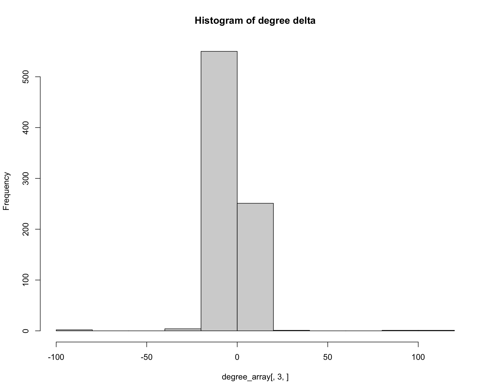
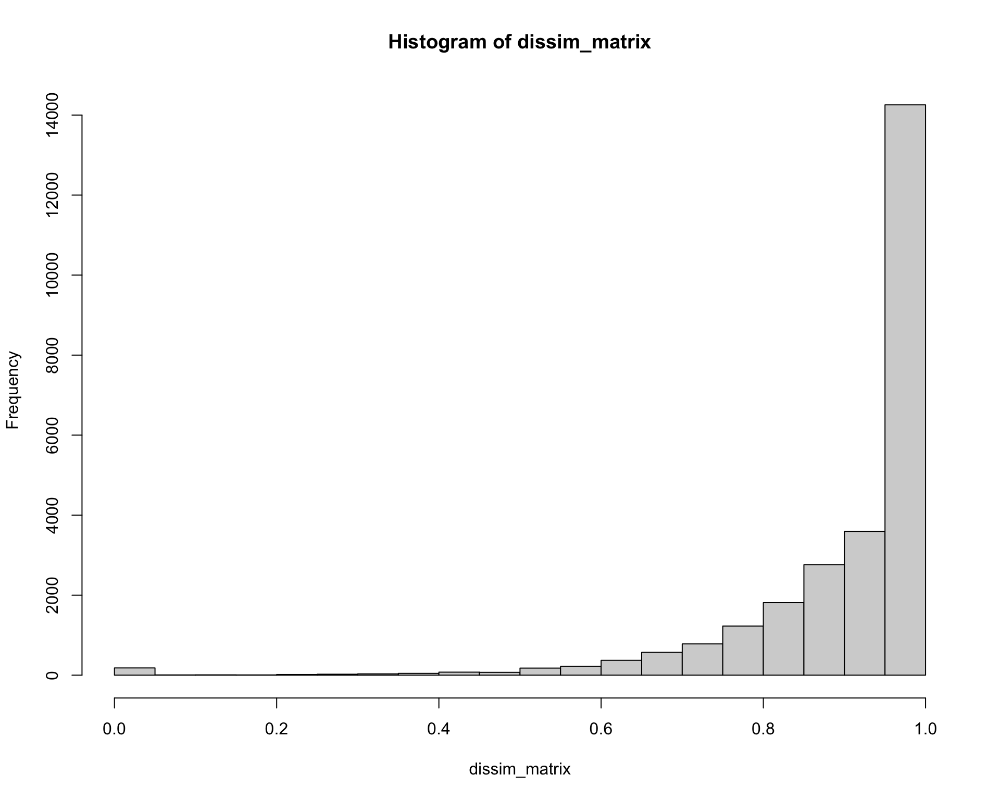
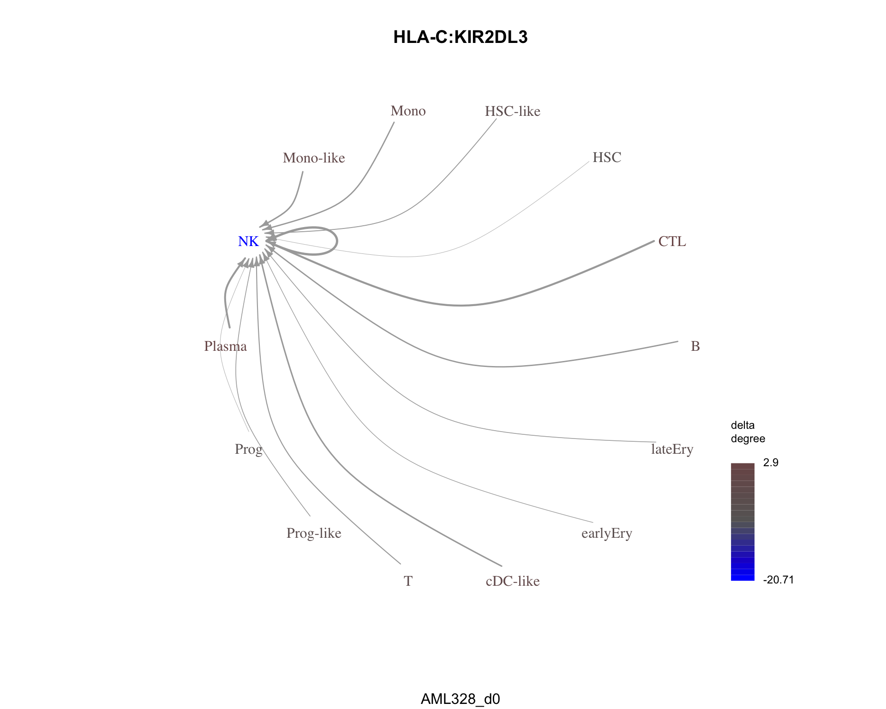
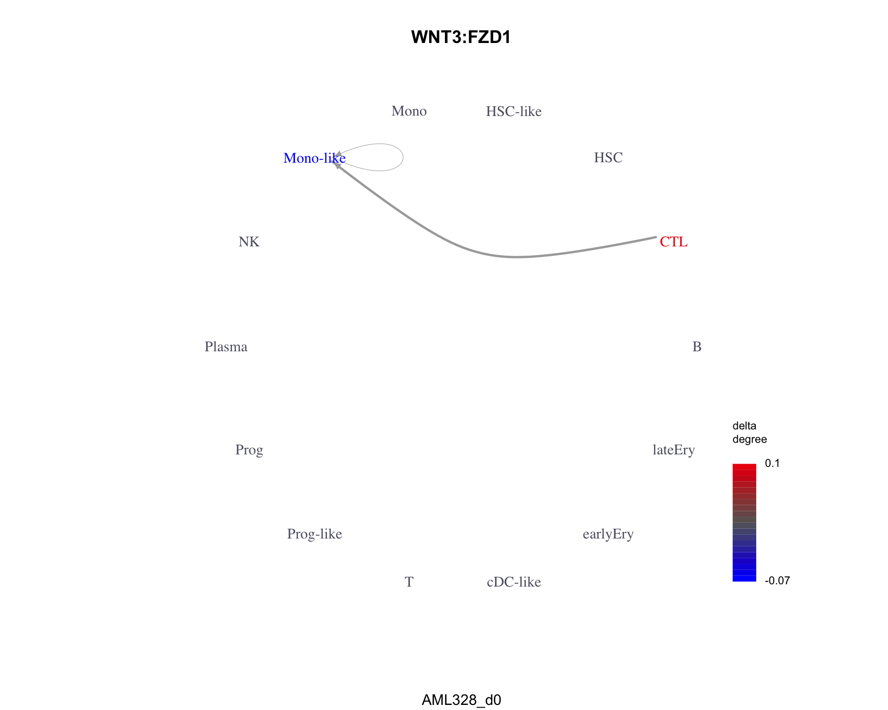
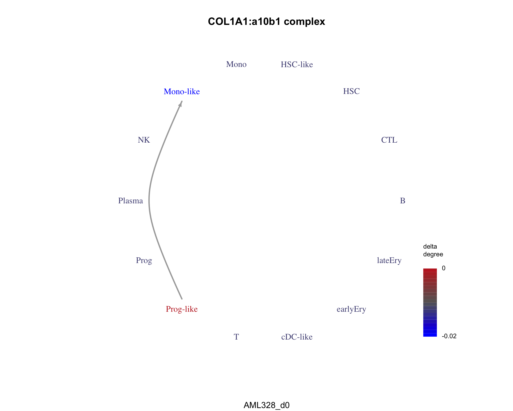

Last updated: 2020-06-04
Checks: 7 0
Knit directory: interaction-tools/
This reproducible R Markdown analysis was created with workflowr (version 1.6.2). The Checks tab describes the reproducibility checks that were applied when the results were created. The Past versions tab lists the development history.
Great! Since the R Markdown file has been committed to the Git repository, you know the exact version of the code that produced these results.
Great job! The global environment was empty. Objects defined in the global environment can affect the analysis in your R Markdown file in unknown ways. For reproduciblity it’s best to always run the code in an empty environment.
The command set.seed(20191213) was run prior to running the code in the R Markdown file. Setting a seed ensures that any results that rely on randomness, e.g. subsampling or permutations, are reproducible.
Great job! Recording the operating system, R version, and package versions is critical for reproducibility.
Nice! There were no cached chunks for this analysis, so you can be confident that you successfully produced the results during this run.
Great job! Using relative paths to the files within your workflowr project makes it easier to run your code on other machines.
Great! You are using Git for version control. Tracking code development and connecting the code version to the results is critical for reproducibility.
The results in this page were generated with repository version 4bb047b. See the Past versions tab to see a history of the changes made to the R Markdown and HTML files.
Note that you need to be careful to ensure that all relevant files for the analysis have been committed to Git prior to generating the results (you can use wflow_publish or wflow_git_commit). workflowr only checks the R Markdown file, but you know if there are other scripts or data files that it depends on. Below is the status of the Git repository when the results were generated:
Ignored files:
Ignored: .Rhistory
Ignored: .Rproj.user/
Ignored: .drake/
Ignored: data/COMUNET/
Ignored: data/NicheNet/
Ignored: data/cellphonedb/
Ignored: output/index.Rmd/
Ignored: renv/library/
Ignored: renv/python/
Ignored: renv/staging/
Untracked files:
Untracked: output/13-COMUNET.Rmd/
Note that any generated files, e.g. HTML, png, CSS, etc., are not included in this status report because it is ok for generated content to have uncommitted changes.
These are the previous versions of the repository in which changes were made to the R Markdown (analysis/13-COMUNET.Rmd) and HTML (docs/13-COMUNET.html) files. If you’ve configured a remote Git repository (see ?wflow_git_remote), click on the hyperlinks in the table below to view the files as they were in that past version.
| File | Version | Author | Date | Message |
|---|---|---|---|---|
| Rmd | fbed032 | Luke Zappia | 2020-06-04 | Complete COMUNET example |
| Rmd | cdb3b4d | Luke Zappia | 2020-06-03 | Set up COMUNET document |
# Setup document
source(here::here("code", "setup.R"))
# Function dependencies
invisible(drake::readd(download_link))In this document we are going to run through the example analysis for the COMUNET package and have a look at the output it produces. More information about COMUNET can be found at https://github.com/ScialdoneLab/COMUNET.
library("COMUNET")Chunk time: 0.54 secs
The COMUNET package performs downstream analysis based on the results of any algorithm which produces a matrix of weights representing the strength of interactions between two cell type from a ligand-receptor pair.
For their tutorials the authors have used the output produced by CellPhoneDB.
We require two of the files which make up the CellPhoneDB database.
This file contains information about the complexes in the CellPhoneDB database.
complex_input <- read_csv(
fs::path(
PATHS$cellphonedb_in,
"database_v2.0.0",
"data",
"complex_input.csv"
),
col_types = cols(
complex_name = col_character(),
uniprot_1 = col_character(),
uniprot_2 = col_character(),
uniprot_3 = col_character(),
uniprot_4 = col_logical(),
transmembrane = col_logical(),
peripheral = col_logical(),
secreted = col_logical(),
secreted_desc = col_character(),
secreted_highlight = col_logical(),
receptor = col_logical(),
receptor_desc = col_character(),
integrin = col_logical(),
other = col_logical(),
other_desc = col_character(),
pdb_id = col_character(),
pdb_structure = col_character(),
stoichiometry = col_character(),
comments_complex = col_character()
)
) %>%
mutate(complex_name = gsub("_" , " " , complex_name))
skim(complex_input)| Name | complex_input |
| Number of rows | 112 |
| Number of columns | 19 |
| _______________________ | |
| Column type frequency: | |
| character | 11 |
| logical | 8 |
| ________________________ | |
| Group variables | None |
Variable type: character
| skim_variable | n_missing | complete_rate | min | max | empty | n_unique | whitespace |
|---|---|---|---|---|---|---|---|
| complex_name | 0 | 1.00 | 4 | 24 | 0 | 112 | 0 |
| uniprot_1 | 0 | 1.00 | 6 | 6 | 0 | 64 | 0 |
| uniprot_2 | 0 | 1.00 | 6 | 6 | 0 | 74 | 0 |
| uniprot_3 | 106 | 0.05 | 6 | 6 | 0 | 6 | 0 |
| secreted_desc | 106 | 0.05 | 4 | 44 | 0 | 5 | 0 |
| receptor_desc | 63 | 0.44 | 18 | 45 | 0 | 16 | 0 |
| other_desc | 110 | 0.02 | 9 | 51 | 0 | 2 | 0 |
| pdb_id | 90 | 0.20 | 4 | 4 | 0 | 22 | 0 |
| pdb_structure | 0 | 1.00 | 4 | 7 | 0 | 3 | 0 |
| stoichiometry | 91 | 0.19 | 9 | 30 | 0 | 21 | 0 |
| comments_complex | 36 | 0.68 | 14 | 176 | 0 | 42 | 0 |
Variable type: logical
| skim_variable | n_missing | complete_rate | mean | count |
|---|---|---|---|---|
| uniprot_4 | 112 | 0 | NaN | : |
| transmembrane | 0 | 1 | 0.94 | TRU: 105, FAL: 7 |
| peripheral | 0 | 1 | 0.01 | FAL: 111, TRU: 1 |
| secreted | 0 | 1 | 0.05 | FAL: 106, TRU: 6 |
| secreted_highlight | 0 | 1 | 0.05 | FAL: 106, TRU: 6 |
| receptor | 0 | 1 | 0.73 | TRU: 82, FAL: 30 |
| integrin | 0 | 1 | 0.21 | FAL: 89, TRU: 23 |
| other | 0 | 1 | 0.02 | FAL: 110, TRU: 2 |
Chunk time: 0.18 secs
This file contains information about the genes in the CellPhoneDB database.
gene_input <- read_csv(
fs::path(
PATHS$cellphonedb_in,
"database_v2.0.0",
"data",
"gene_input.csv"
),
col_types = cols(
gene_name = col_character(),
uniprot = col_character(),
hgnc_symbol = col_character(),
ensembl = col_character()
)
)
skim(gene_input)| Name | gene_input |
| Number of rows | 1252 |
| Number of columns | 4 |
| _______________________ | |
| Column type frequency: | |
| character | 4 |
| ________________________ | |
| Group variables | None |
Variable type: character
| skim_variable | n_missing | complete_rate | min | max | empty | n_unique | whitespace |
|---|---|---|---|---|---|---|---|
| gene_name | 0 | 1 | 2 | 9 | 0 | 979 | 0 |
| uniprot | 0 | 1 | 4 | 7 | 0 | 978 | 0 |
| hgnc_symbol | 1 | 1 | 2 | 9 | 0 | 979 | 0 |
| ensembl | 0 | 1 | 15 | 15 | 0 | 1251 | 0 |
Chunk time: 0.07 secs
Output files from running CellPhoneDB
Information about each ligand-receptor pair as well as scores for each pair of cell types calculated by CellPhoneDB.
means <- read_tsv(
fs::path(PATHS$COMUNET_in, "mouse", "significant_means.txt"),
col_types = cols(
.default = col_double(),
id_cp_interaction = col_character(),
interacting_pair = col_character(),
partner_a = col_character(),
partner_b = col_character(),
gene_a = col_character(),
gene_b = col_character(),
secreted = col_logical(),
receptor_a = col_logical(),
receptor_b = col_logical(),
annotation_strategy = col_character(),
is_integrin = col_logical()
)
)
skim(means)| Name | means |
| Number of rows | 403 |
| Number of columns | 37 |
| _______________________ | |
| Column type frequency: | |
| character | 7 |
| logical | 4 |
| numeric | 26 |
| ________________________ | |
| Group variables | None |
Variable type: character
| skim_variable | n_missing | complete_rate | min | max | empty | n_unique | whitespace |
|---|---|---|---|---|---|---|---|
| id_cp_interaction | 0 | 1.00 | 15 | 15 | 0 | 403 | 0 |
| interacting_pair | 0 | 1.00 | 8 | 24 | 0 | 402 | 0 |
| partner_a | 0 | 1.00 | 12 | 26 | 0 | 196 | 0 |
| partner_b | 0 | 1.00 | 13 | 25 | 0 | 195 | 0 |
| gene_a | 36 | 0.91 | 2 | 8 | 0 | 181 | 0 |
| gene_b | 60 | 0.85 | 3 | 9 | 0 | 178 | 0 |
| annotation_strategy | 0 | 1.00 | 3 | 33 | 0 | 19 | 0 |
Variable type: logical
| skim_variable | n_missing | complete_rate | mean | count |
|---|---|---|---|---|
| secreted | 0 | 1 | 0.80 | TRU: 323, FAL: 80 |
| receptor_a | 0 | 1 | 0.43 | FAL: 231, TRU: 172 |
| receptor_b | 0 | 1 | 0.51 | TRU: 204, FAL: 199 |
| is_integrin | 0 | 1 | 0.13 | FAL: 350, TRU: 53 |
Variable type: numeric
| skim_variable | n_missing | complete_rate | mean | sd | p0 | p25 | p50 | p75 | p100 | hist |
|---|---|---|---|---|---|---|---|---|---|---|
| rank | 0 | 1.00 | 1.04 | 0.69 | 0.04 | 0.20 | 1.60 | 1.60 | 1.60 | ▅▁▁▁▇ |
| EPI|EPI | 385 | 0.04 | 1.43 | 2.13 | 0.26 | 0.36 | 0.54 | 1.53 | 7.12 | ▇▂▁▁▁ |
| EPI|Mes | 367 | 0.09 | 0.84 | 1.15 | 0.22 | 0.31 | 0.60 | 0.89 | 7.23 | ▇▁▁▁▁ |
| EPI|TE | 382 | 0.05 | 1.20 | 1.44 | 0.27 | 0.56 | 0.92 | 1.33 | 7.09 | ▇▁▁▁▁ |
| EPI|emVE | 368 | 0.09 | 1.12 | 1.58 | 0.19 | 0.49 | 0.65 | 0.99 | 7.26 | ▇▁▁▁▁ |
| EPI|exVE | 377 | 0.06 | 1.28 | 1.77 | 0.17 | 0.44 | 0.76 | 1.20 | 7.10 | ▇▁▁▁▁ |
| Mes|EPI | 363 | 0.10 | 1.36 | 1.82 | 0.22 | 0.42 | 0.52 | 0.95 | 6.93 | ▇▁▁▁▁ |
| Mes|Mes | 330 | 0.18 | 0.89 | 1.29 | 0.15 | 0.37 | 0.50 | 0.74 | 7.03 | ▇▁▁▁▁ |
| Mes|TE | 369 | 0.08 | 1.37 | 1.66 | 0.21 | 0.45 | 0.73 | 1.28 | 6.89 | ▇▁▁▁▁ |
| Mes|emVE | 353 | 0.12 | 1.05 | 1.50 | 0.20 | 0.44 | 0.62 | 0.82 | 7.07 | ▇▁▁▁▁ |
| Mes|exVE | 359 | 0.11 | 1.09 | 1.58 | 0.22 | 0.40 | 0.63 | 0.85 | 6.91 | ▇▁▁▁▁ |
| TE|EPI | 380 | 0.06 | 0.75 | 0.52 | 0.26 | 0.38 | 0.55 | 0.98 | 2.01 | ▇▂▁▁▁ |
| TE|Mes | 362 | 0.10 | 0.70 | 0.40 | 0.20 | 0.32 | 0.63 | 0.90 | 1.84 | ▇▃▃▁▁ |
| TE|TE | 381 | 0.05 | 0.70 | 0.34 | 0.19 | 0.50 | 0.65 | 0.96 | 1.36 | ▆▇▂▇▂ |
| TE|emVE | 366 | 0.09 | 0.75 | 0.42 | 0.20 | 0.49 | 0.63 | 0.91 | 2.00 | ▇▇▂▁▁ |
| TE|exVE | 378 | 0.06 | 0.70 | 0.36 | 0.18 | 0.42 | 0.62 | 0.98 | 1.36 | ▇▇▃▆▅ |
| emVE|EPI | 374 | 0.07 | 2.90 | 9.14 | 0.18 | 0.39 | 0.85 | 1.28 | 49.69 | ▇▁▁▁▁ |
| emVE|Mes | 353 | 0.12 | 0.79 | 1.17 | 0.16 | 0.33 | 0.50 | 0.73 | 6.93 | ▇▁▁▁▁ |
| emVE|TE | 380 | 0.06 | 3.22 | 10.20 | 0.16 | 0.62 | 0.77 | 1.04 | 49.62 | ▇▁▁▁▁ |
| emVE|emVE | 361 | 0.10 | 2.19 | 7.62 | 0.17 | 0.51 | 0.72 | 1.00 | 49.64 | ▇▁▁▁▁ |
| emVE|exVE | 375 | 0.07 | 3.00 | 9.29 | 0.22 | 0.48 | 0.89 | 1.36 | 49.68 | ▇▁▁▁▁ |
| exVE|EPI | 373 | 0.07 | 2.66 | 9.02 | 0.26 | 0.40 | 0.64 | 1.26 | 50.14 | ▇▁▁▁▁ |
| exVE|Mes | 360 | 0.11 | 0.83 | 0.84 | 0.23 | 0.34 | 0.55 | 0.94 | 5.01 | ▇▁▁▁▁ |
| exVE|TE | 385 | 0.04 | 3.95 | 11.57 | 0.25 | 0.58 | 0.84 | 1.89 | 50.08 | ▇▁▁▁▁ |
| exVE|emVE | 368 | 0.09 | 2.31 | 8.36 | 0.16 | 0.52 | 0.66 | 1.06 | 50.09 | ▇▁▁▁▁ |
| exVE|exVE | 383 | 0.05 | 3.56 | 11.03 | 0.20 | 0.42 | 0.69 | 1.30 | 50.13 | ▇▁▁▁▁ |
Chunk time: 0.24 secs
The first step is to convert the output from CellPhoneDB into the format used by COMUNET. Instead of the single matrix provided by CellPhoneDB, COMUNET needs a matrix for each ligand-receptor pair where the rows are sending cell types and the columns are receiving cell types.
prepped_means <- means %>%
as.data.frame() %>%
distinct(interacting_pair, .keep_all = TRUE)
rownames(prepped_means) <- prepped_means$interacting_pair
interactions <- convert_CellPhoneDB_output(
CellPhoneDB_output = prepped_means,
complex_input = complex_input,
gene_input = gene_input
)Chunk time: 1.49 secs
The result of the conversion function is a list with 3 items.
The first item is a three-dimensional array with the weights calculated by CellPhoneDB. There are 162 of these matrices, here is an example of the first one.
pander(interactions$weight_array[, , 1])| EPI | Mes | TE | emVE | exVE | |
|---|---|---|---|---|---|
| EPI | 0 | 0 | 0 | 0 | 0 |
| Mes | 0 | 0 | 0 | 0.438 | 0 |
| TE | 0 | 0 | 0 | 0 | 0 |
| emVE | 0 | 0 | 0 | 0 | 0 |
| exVE | 0 | 0 | 0 | 0 | 0 |
Chunk time: 0.02 secs
The second item contains information about ligand-receptor pairs.
skim(interactions$ligand_receptor_pair_df)| Name | interactions$ligand_recep… |
| Number of rows | 162 |
| Number of columns | 5 |
| _______________________ | |
| Column type frequency: | |
| character | 5 |
| ________________________ | |
| Group variables | None |
Variable type: character
| skim_variable | n_missing | complete_rate | min | max | empty | n_unique | whitespace |
|---|---|---|---|---|---|---|---|
| pair | 0 | 1 | 8 | 24 | 0 | 162 | 0 |
| ligand | 0 | 1 | 3 | 7 | 0 | 71 | 0 |
| ligand_complex_composition | 0 | 1 | 3 | 7 | 0 | 71 | 0 |
| receptor | 0 | 1 | 3 | 18 | 0 | 88 | 0 |
| receptor_complex_composition | 0 | 1 | 3 | 19 | 0 | 88 | 0 |
Chunk time: 0.05 secs
The final item is a vector of the names of all the cell types: EPI, Mes, TE, emVE, exVE
The aim of this analysis is to find ligand-receptor pairs that interact in similar ways. This is done by clustering the communication graphs of the ligand-receptor pairs.
lrp_clusters <- lrp_clustering(
weight_array = interactions$weight_array,
ligand_receptor_pair_df = interactions$ligand_receptor_pair_df,
nodes = interactions$nodes
)
..cutHeight not given, setting it to 0.986 ===> 99% of the (truncated) height range in dendro.
..done.
[1] "Warning: some graphs are not assigned to any cluster"
[1] "We have 8 clusters"Chunk time: 2.02 secs
This step produces a list with 3 items.
Matrix with distances between each ligand-receptor pair. Here is a small example.
pander(lrp_clusters$dissim_matrix[1:5, 1:5])| WNT5A:FZD6 | NRG1:NETO2 | EFNB1:EPHB2 | EPHB2:EFNB3 | WNT2:FZD4 | |
|---|---|---|---|---|---|
| WNT5A:FZD6 | 0 | 1 | 1 | 1 | 1 |
| NRG1:NETO2 | 1 | 0 | 1 | 1 | 1 |
| EFNB1:EPHB2 | 1 | 1 | 0 | 1 | 1 |
| EPHB2:EFNB3 | 1 | 1 | 1 | 0 | 1 |
| WNT2:FZD4 | 1 | 1 | 1 | 1 | 0 |
Chunk time: 0.02 secs
Cluster assignments for each ligand-receptor pair.
kable(head(lrp_clusters$clusters))| x | |
|---|---|
| WNT5A:FZD6 | 4 |
| NRG1:NETO2 | 2 |
| EFNB1:EPHB2 | 2 |
| EPHB2:EFNB3 | 1 |
| WNT2:FZD4 | 4 |
| VEGFA:EPHB2 | 2 |
Chunk time: 0 secs
The average interaction weights between cell types by cluster. There are 8 of these matrices, here is an example of the first one.
pander(lrp_clusters$weight_array_by_cluster[, , 1])| EPI | Mes | TE | emVE | exVE | |
|---|---|---|---|---|---|
| EPI | 0.09733 | 0.1426 | 0.09956 | 0.2001 | 0.1412 |
| Mes | 0.2163 | 0.2975 | 0.1857 | 0.2907 | 0.2219 |
| TE | 0.3269 | 0.4548 | 0.3043 | 0.512 | 0.4484 |
| emVE | 0.04547 | 0.06903 | 0.04306 | 0.1099 | 0.03228 |
| exVE | 0.02636 | 0.04067 | 0.04483 | 0.06939 | 0 |
Chunk time: 0.01 secs
We can visualise the results in different ways.
We can plot a heatmap of the clustered ligand-receptor pairs.
plot_cluster_heatmap(
dissim_matrix = lrp_clusters$dissim_matrix,
lrp_clusters = lrp_clusters$clusters
)Chunk time: 0.92 secs
We can also make a UMAP plot showing the pairs in a reduced dimensional space.
plot_cluster_UMAP(
ligand_receptor_pair_df = interactions$ligand_receptor_pair_df,
dissim_matrix = lrp_clusters$dissim_matrix,
lrp_clusters = lrp_clusters$clusters
)Chunk time: 0.82 secs
The average communication between cell types for each cluster can be shown as a graph. Here are examples for the first three clusters.
for(cluster_idx in c(1:3)){
cluster <- paste("cluster", cluster_idx)
plot_communication_graph(
LRP = cluster,
weight_array = lrp_clusters$weight_array_by_cluster[, , cluster],
ligand_receptor_pair_df = interactions$ligand_receptor_pair_df,
nodes = interactions$nodes,
is_cluster = TRUE
)
}Chunk time: 0.38 secs
We can also look at the specific ligand-receptor pairs in a cluster.
for(cluster_idx in c(1:3)) {
plot_lig_rec(
cluster_of_interest = cluster_idx,
lrp_clusters = lrp_clusters$clusters,
ligand_receptor_pair_df = interactions$ligand_receptor_pair_df,
node_label_cex = 0.5
)
}Chunk time: 0.63 secs
COMUNET can also be used to search for specific patterns of interactions. Here we search for interactions from a specific cell type to all other cell types.
First we construct a matrix describing the pattern we are interested in.
communicating_nodes <- c(
"exVE_to_EPI", "exVE_to_Mes", "exVE_to_TE", "exVE_to_emVE", "exVE_to_exVE"
)
pattern <- make_pattern_matrix(
communicating_nodes = communicating_nodes,
nodes = interactions$nodes
)[1] "sending nodes are:"
[1] "exVE" "exVE" "exVE" "exVE" "exVE"
[1] "receiving nodes are:"
[1] "EPI" "Mes" "TE" "emVE" "exVE"pander(pattern)| EPI | Mes | TE | emVE | exVE | |
|---|---|---|---|---|---|
| EPI | 0 | 0 | 0 | 0 | 0 |
| Mes | 0 | 0 | 0 | 0 | 0 |
| TE | 0 | 0 | 0 | 0 | 0 |
| emVE | 0 | 0 | 0 | 0 | 0 |
| exVE | 1 | 1 | 1 | 1 | 1 |
Chunk time: 0.01 secs
We can also visualise this pattern to check it is correct.
plot_communication_graph(
LRP = "My pattern of interest",
weight_array = pattern,
ligand_receptor_pair_df = interactions$ligand_receptor_pair_df,
nodes = interactions$node,
is_pattern = TRUE
)Chunk time: 0.09 secs
Now we can search for this pattern. The result is a dissimilarity to the search pattern for each ligand-receptor pair.
patterns <- pattern_search(
pattern_adj_matrix = pattern,
weight_array = interactions$weight_array,
ligand_receptor_pair_df = interactions$ligand_receptor_pair_df,
nodes = interactions$nodes
)
skim(patterns)| Name | patterns |
| Number of rows | 162 |
| Number of columns | 2 |
| _______________________ | |
| Column type frequency: | |
| character | 1 |
| numeric | 1 |
| ________________________ | |
| Group variables | None |
Variable type: character
| skim_variable | n_missing | complete_rate | min | max | empty | n_unique | whitespace |
|---|---|---|---|---|---|---|---|
| pair | 0 | 1 | 8 | 24 | 0 | 162 | 0 |
Variable type: numeric
| skim_variable | n_missing | complete_rate | mean | sd | p0 | p25 | p50 | p75 | p100 | hist |
|---|---|---|---|---|---|---|---|---|---|---|
| dissimilarity | 0 | 1 | 0.88 | 0.22 | 0 | 0.83 | 1 | 1 | 1 | ▁▁▁▁▇ |
Chunk time: 0.07 secs
We can visualise examples of some ligand-receptor pairs along with their dissimilarity to the search pattern.
for (pair in c("IGF2:IGF2R", "EFNB1:EPHA4", "IGF2:IGF1R")) {
plot_communication_graph(
LRP = pair,
weight_array = interactions$weight_array,
ligand_receptor_pair_df = interactions$ligand_receptor_pair_df,
nodes = interactions$node,
subtitle = paste(
"dissimilarity:", patterns[pair,"dissimilarity"]
)
)
}Chunk time: 0.34 secs
We can also use COMUNET to compare the interaction network between two conditions. For this analysis we use a second dataset that includes AML samples before and after treatment.
cond1 <- "AML328_d0"
cond2 <- "AML328_d29"
cond1_means <- read_tsv(
fs::path(PATHS$COMUNET_in, "AML", "means_d0.txt"),
col_types = cols(
.default = col_double(),
id_cp_interaction = col_character(),
interacting_pair = col_character(),
partner_a = col_character(),
partner_b = col_character(),
gene_a = col_character(),
gene_b = col_character(),
secreted = col_logical(),
receptor_a = col_logical(),
receptor_b = col_logical(),
annotation_strategy = col_character(),
is_integrin = col_logical()
)
)
cond2_means <- read_tsv(
fs::path(PATHS$COMUNET_in, "AML", "means_d29.txt"),
col_types = cols(
.default = col_double(),
id_cp_interaction = col_character(),
interacting_pair = col_character(),
partner_a = col_character(),
partner_b = col_character(),
gene_a = col_character(),
gene_b = col_character(),
secreted = col_logical(),
receptor_a = col_logical(),
receptor_b = col_logical(),
annotation_strategy = col_character(),
is_integrin = col_logical()
)
)
cond1_prepped_means <- cond1_means %>%
as.data.frame() %>%
distinct(interacting_pair, .keep_all = TRUE)
rownames(cond1_prepped_means) <- cond1_prepped_means$interacting_pair
cond2_prepped_means <- cond2_means %>%
as.data.frame() %>%
distinct(interacting_pair, .keep_all = TRUE)
rownames(cond2_prepped_means) <- cond2_prepped_means$interacting_pair
cond1_interactions <- convert_CellPhoneDB_output(
CellPhoneDB_output = cond1_prepped_means,
complex_input = complex_input,
gene_input = gene_input
)
cond2_interactions <- convert_CellPhoneDB_output(
CellPhoneDB_output = cond2_prepped_means,
complex_input = complex_input,
gene_input = gene_input
)Chunk time: 25.35 secs
First we check the overlap in ligand-receptor pairs in the two conditions.
cond1_pairs <- cond1_interactions$ligand_receptor_pair_df$pair
cond2_pairs <- cond2_interactions$ligand_receptor_pair_df$pair
inter <- intersect(cond1_pairs, cond2_pairs)
cond1_only <- setdiff(cond1_pairs, cond2_pairs)
cond2_only <- setdiff(cond2_pairs, cond1_pairs)Chunk time: 0.01 secs
There are 305 pairs present in both conditions, 14, present only in the first condition and 10 present in only the second condition.
Just because the pairs are present doesn’t mean they are interacting in the same way. To find that out we need to run the analysis.
result <- comparative_analysis(
cond1_weight_array = cond1_interactions$weight_array,
cond2_weight_array = cond2_interactions$weight_array,
cond1_ligand_receptor_pair_df = cond1_interactions$ligand_receptor_pair_df,
cond2_ligand_receptor_pair_df = cond2_interactions$ligand_receptor_pair_df,
cond1_nodes = cond1_interactions$nodes,
cond2_nodes = cond2_interactions$nodes,
cond1_name = cond1,
cond2_name = cond2
)Chunk time: 1.16 mins
The output of the comparison function is a list with 2 items.
The first item describes the ligand-receptor pairs, which conditions that are present in and the dissimilarity between the conditions.
skim(result$sorted_LRP_df)| Name | result$sorted_LRP_df |
| Number of rows | 329 |
| Number of columns | 3 |
| _______________________ | |
| Column type frequency: | |
| character | 1 |
| factor | 1 |
| numeric | 1 |
| ________________________ | |
| Group variables | None |
Variable type: character
| skim_variable | n_missing | complete_rate | min | max | empty | n_unique | whitespace |
|---|---|---|---|---|---|---|---|
| pair | 0 | 1 | 7 | 24 | 0 | 329 | 0 |
Variable type: factor
| skim_variable | n_missing | complete_rate | ordered | n_unique | top_counts |
|---|---|---|---|---|---|
| presence | 0 | 1 | TRUE | 3 | sha: 305, onl: 14, onl: 10 |
Variable type: numeric
| skim_variable | n_missing | complete_rate | mean | sd | p0 | p25 | p50 | p75 | p100 | hist |
|---|---|---|---|---|---|---|---|---|---|---|
| dissimilarity | 0 | 1 | 0.79 | 0.17 | 0.13 | 0.68 | 0.83 | 0.91 | 1 | ▁▁▂▅▇ |
Chunk time: 0.06 secs
The second output is a dissimilarity matrix where the rows are ligand-receptor pairs in condition 1 and and the columns are ligand-receptor pairs in condition 2.
pander(result$dissim_cond1_cond2[1:5, 1:5])| TNFSF9:HLA-DPA1 | TNFSF9:PVR | PVR:CD96 | PVR:CD226 | |
|---|---|---|---|---|
| TNFSF9:HLA-DPA1 | 0.8851 | 0.972 | 0.9291 | 0.9455 |
| TNFSF9:PVR | 0.9782 | 0.9227 | 0.9766 | 0.9211 |
| PVR:CD96 | 0.9358 | 0.9459 | 0.7778 | 0.9017 |
| PVR:CD226 | 0.9213 | 0.9399 | 0.8773 | 0.8039 |
| TIGIT:PVR | 0.946 | 0.9062 | 0.9241 | 0.8799 |
| TIGIT:PVR | |
|---|---|
| TNFSF9:HLA-DPA1 | 0.9789 |
| TNFSF9:PVR | 0.9486 |
| PVR:CD96 | 0.8841 |
| PVR:CD226 | 0.8951 |
| TIGIT:PVR | 0.8166 |
Chunk time: 0.02 secs
We can plot a heatmap of the dissimilarity between conditions.
plot_dissimilarity_heatmaps(
dissim_cond1_cond2 = result$dissim_cond1_cond2,
sorted_LRP_df = result$sorted_LRP_df,
cond1_name = cond1,
cond2_name = cond2
)Chunk time: 7.67 secs
Graphs can be used to show the communication networks for a ligand-receptor pair. Let’s compare the graphs between conditions for a set of example pairs.
most_similar <- result$sorted_LRP_df %>%
filter(
presence == "shared",
dissimilarity == min(dissimilarity)
)Chunk time: 0 secs
The most similar pair is HLA-C:KIR2DL3 with a dissimilarity of 0.1293086.
plot_communication_graph(
LRP = most_similar$pair,
weight_array = cond1_interactions$weight_array,
ligand_receptor_pair_df = cond1_interactions$ligand_receptor_pair_df,
nodes = cond1_interactions$node,
title = most_similar$pair,
subtitle = cond1
)
plot_communication_graph(
LRP = most_similar$pair,
weight_array = cond2_interactions$weight_array,
ligand_receptor_pair_df = cond2_interactions$ligand_receptor_pair_df,
nodes = cond2_interactions$node,
title = most_similar$pair,
subtitle = cond2
)Chunk time: 0.32 secs
least_similar <- result$sorted_LRP_df %>%
filter(
presence == "shared",
dissimilarity == max(dissimilarity)
) %>%
top_n(1, pair)Chunk time: 0 secs
The least similar pair is WNT3:FZD1 with a dissimilarity of 1.
plot_communication_graph(
LRP = least_similar$pair,
weight_array = cond1_interactions$weight_array,
ligand_receptor_pair_df = cond1_interactions$ligand_receptor_pair_df,
nodes = cond1_interactions$node,
title = least_similar$pair,
subtitle = cond1
)
plot_communication_graph(
LRP = least_similar$pair,
weight_array = cond2_interactions$weight_array,
ligand_receptor_pair_df = cond2_interactions$ligand_receptor_pair_df,
nodes = cond2_interactions$node,
title = least_similar$pair,
subtitle = cond2
)Chunk time: 0.25 secs
An example of a pair only in condition 1 is COL1A1:a10b1 complex.
plot_communication_graph(
LRP = cond1_only[1],
weight_array = cond1_interactions$weight_array,
ligand_receptor_pair_df = cond1_interactions$ligand_receptor_pair_df,
nodes = cond1_interactions$node,
title = cond1_only[1],
subtitle = cond1
)
plot_communication_graph(
LRP = cond1_only[1],
weight_array = cond2_interactions$weight_array,
ligand_receptor_pair_df = cond2_interactions$ligand_receptor_pair_df,
nodes = cond2_interactions$node,
title = cond1_only[1],
subtitle = cond2
)Chunk time: 0.24 secs
An example of a pair only in condition 2 is FN1:aVb3 complex.
plot_communication_graph(
LRP = cond2_only[1],
weight_array = cond1_interactions$weight_array,
ligand_receptor_pair_df = cond1_interactions$ligand_receptor_pair_df,
nodes = cond1_interactions$node,
title = cond2_only[1],
subtitle = cond1
)plot_communication_graph(
LRP = cond2_only[1],
weight_array = cond2_interactions$weight_array,
ligand_receptor_pair_df = cond2_interactions$ligand_receptor_pair_df,
nodes = cond2_interactions$node,
title = cond2_only[1],
subtitle = cond2
)Chunk time: 0.28 secs
This table describes parameters used and set in this document.
params <- list(
)
params <- toJSON(params, pretty = TRUE)
kable(fromJSON(params))Chunk time: 0.01 secs
This table describes the output files produced by this document. Right click and Save Link As… to download the results.
lrp_clusters$dissim_matrix %>%
as.data.frame() %>%
rownames_to_column("Pair") %>%
write_tsv(fs::path(OUT_DIR, "cluster_dissimilarity.tsv"))
tibble(Pair = names(lrp_clusters$clusters), Cluster = lrp_clusters$clusters) %>%
write_tsv(fs::path(OUT_DIR, "clusters.tsv"))
write_rds(
lrp_clusters$weight_array_by_cluster,
fs::path(OUT_DIR, "cluster_weights.Rds")
)
write_tsv(patterns, fs::path(OUT_DIR, "patterns.tsv"))
write_tsv(result$sorted_LRP_df, fs::path(OUT_DIR, "comparison_pairs.tsv"))
result$dissim_cond1_cond2 %>%
as.data.frame() %>%
rownames_to_column("Condition1") %>%
write_tsv(fs::path(OUT_DIR, "comparison_dissimilarity.tsv"))
kable(data.frame(
File = c(
download_link("parameters.json", OUT_DIR),
download_link("cluster_dissimilarity.tsv", OUT_DIR),
download_link("clusters.tsv", OUT_DIR),
download_link("cluster_weights.Rds", OUT_DIR),
download_link("patterns.tsv", OUT_DIR),
download_link("comparison_pairs.tsv", OUT_DIR),
download_link("comparison_dissimilarity.tsv", OUT_DIR)
),
Description = c(
"Parameters set and used in this analysis",
"Cluster dissimilarity matrix",
"Cluster assignments for pairs",
"Cluster average weights array",
"Pattern dissimilarity for pairs",
"Comparison information about pairs",
"Comparison dissimilarity matrix"
)
))| File | Description |
|---|---|
| parameters.json | Parameters set and used in this analysis |
| cluster_dissimilarity.tsv | Cluster dissimilarity matrix |
| clusters.tsv | Cluster assignments for pairs |
| cluster_weights.Rds | Cluster average weights array |
| patterns.tsv | Pattern dissimilarity for pairs |
| comparison_pairs.tsv | Comparison information about pairs |
| comparison_dissimilarity.tsv | Comparison dissimilarity matrix |
Chunk time: 0.11 secs
sessioninfo::session_info()─ Session info ───────────────────────────────────────────────────────────────
setting value
version R version 4.0.0 (2020-04-24)
os macOS Catalina 10.15.4
system x86_64, darwin17.0
ui X11
language (EN)
collate en_US.UTF-8
ctype en_US.UTF-8
tz Europe/Berlin
date 2020-06-04
─ Packages ───────────────────────────────────────────────────────────────────
! package * version date lib
P askpass 1.1 2019-01-13 [?]
P assertthat 0.2.1 2019-03-21 [?]
P backports 1.1.6 2020-04-05 [?]
P base64enc 0.1-3 2015-07-28 [?]
P base64url 1.4 2018-05-14 [?]
P BiocManager 1.30.10 2019-11-16 [?]
P broom 0.5.6 2020-04-20 [?]
P cellranger 1.1.0 2016-07-27 [?]
P circlize 0.4.9 2020-04-30 [?]
P cli 2.0.2 2020-02-28 [?]
clue 0.3-57 2019-02-25 [1]
P cluster 2.1.0 2019-06-19 [?]
P colorspace 1.4-1 2019-03-18 [?]
ComplexHeatmap * 2.4.2 2020-05-04 [1]
COMUNET * 0.1.0 2020-06-03 [1]
P conflicted * 1.0.4 2019-06-21 [?]
P crayon 1.3.4 2017-09-16 [?]
P DBI 1.1.0 2019-12-15 [?]
P dbplyr 1.4.3 2020-04-19 [?]
P digest 0.6.25 2020-02-23 [?]
P dplyr * 0.8.5 2020-03-07 [?]
P drake 7.12.0 2020-03-25 [?]
dynamicTreeCut * 1.63-1 2016-03-11 [1]
P ellipsis 0.3.0 2019-09-20 [?]
P evaluate 0.14 2019-05-28 [?]
P fansi 0.4.1 2020-01-08 [?]
P farver 2.0.3 2020-01-16 [?]
P filelock 1.0.2 2018-10-05 [?]
P forcats * 0.5.0 2020-03-01 [?]
P fs * 1.4.1 2020-04-04 [?]
P generics 0.0.2 2018-11-29 [?]
GetoptLong 0.1.8 2020-01-08 [1]
P ggplot2 * 3.3.0 2020-03-05 [?]
P git2r 0.27.1 2020-05-03 [?]
P GlobalOptions 0.1.1 2019-09-30 [?]
P glue * 1.4.0 2020-04-03 [?]
P gtable 0.3.0 2019-03-25 [?]
P haven 2.2.0 2019-11-08 [?]
P here * 0.1 2017-05-28 [?]
P highr 0.8 2019-03-20 [?]
P hms 0.5.3 2020-01-08 [?]
P htmltools 0.4.0 2019-10-04 [?]
P httpuv 1.5.2 2019-09-11 [?]
P httr 1.4.1 2019-08-05 [?]
P igraph * 1.2.5 2020-03-19 [?]
P jsonlite * 1.6.1 2020-02-02 [?]
P knitr * 1.28 2020-02-06 [?]
P labeling 0.3 2014-08-23 [?]
P later 1.0.0 2019-10-04 [?]
P lattice 0.20-41 2020-04-02 [?]
P lifecycle 0.2.0 2020-03-06 [?]
P lubridate 1.7.8 2020-04-06 [?]
P magrittr 1.5 2014-11-22 [?]
P Matrix 1.2-18 2019-11-27 [?]
P memoise 1.1.0 2017-04-21 [?]
P modelr 0.1.7 2020-04-30 [?]
P munsell 0.5.0 2018-06-12 [?]
P nlme 3.1-147 2020-04-13 [?]
P openssl 1.4.1 2019-07-18 [?]
P pander * 0.6.3 2018-11-06 [?]
P pillar 1.4.4 2020-05-05 [?]
P pkgconfig 2.0.3 2019-09-22 [?]
png 0.1-7 2013-12-03 [1]
P prettyunits 1.1.1 2020-01-24 [?]
P progress 1.2.2 2019-05-16 [?]
P promises 1.1.0 2019-10-04 [?]
P purrr * 0.3.4 2020-04-17 [?]
P R.methodsS3 1.8.0 2020-02-14 [?]
P R.oo 1.23.0 2019-11-03 [?]
P R.utils 2.9.2 2019-12-08 [?]
P R6 2.4.1 2019-11-12 [?]
P RColorBrewer 1.1-2 2014-12-07 [?]
P Rcpp 1.0.4.6 2020-04-09 [?]
P readr * 1.3.1 2018-12-21 [?]
P readxl 1.3.1 2019-03-13 [?]
renv 0.10.0 2020-05-06 [1]
P repr 1.1.0 2020-01-28 [?]
P reprex 0.3.0 2019-05-16 [?]
P reticulate 1.15 2020-04-02 [?]
rjson 0.2.20 2018-06-08 [1]
P rlang 0.4.6 2020-05-02 [?]
P rmarkdown 2.1 2020-01-20 [?]
P rprojroot 1.3-2 2018-01-03 [?]
RSpectra 0.16-0 2019-12-01 [1]
P rstudioapi 0.11 2020-02-07 [?]
P rvest 0.3.5 2019-11-08 [?]
P scales 1.1.0 2019-11-18 [?]
P SDMTools * 1.1-221.2 2019-11-30 [?]
P sessioninfo 1.1.1 2018-11-05 [?]
P shape 1.4.4 2018-02-07 [?]
P skimr * 2.1.1 2020-04-16 [?]
P storr 1.2.1 2018-10-18 [?]
P stringi 1.4.6 2020-02-17 [?]
P stringr * 1.4.0 2019-02-10 [?]
P tibble * 3.0.1 2020-04-20 [?]
tidyr * 1.0.3 2020-05-07 [1]
P tidyselect 1.0.0 2020-01-27 [?]
P tidyverse * 1.3.0 2019-11-21 [?]
P txtq 0.2.0 2019-10-15 [?]
umap * 0.2.5.0 2020-03-09 [1]
P vctrs 0.2.4 2020-03-10 [?]
P whisker 0.4 2019-08-28 [?]
P withr 2.2.0 2020-04-20 [?]
P workflowr 1.6.2 2020-04-30 [?]
P xfun 0.13 2020-04-13 [?]
P xml2 1.3.2 2020-04-23 [?]
P yaml 2.2.1 2020-02-01 [?]
source
standard (@1.1)
CRAN (R 4.0.0)
CRAN (R 4.0.0)
CRAN (R 4.0.0)
standard (@1.4)
CRAN (R 4.0.0)
CRAN (R 4.0.0)
standard (@1.1.0)
CRAN (R 4.0.0)
CRAN (R 4.0.0)
CRAN (R 4.0.0)
CRAN (R 4.0.0)
standard (@1.4-1)
Bioconductor
Github (ScialdoneLab/COMUNET@4fd4635)
standard (@1.0.4)
CRAN (R 4.0.0)
CRAN (R 4.0.0)
CRAN (R 4.0.0)
CRAN (R 4.0.0)
CRAN (R 4.0.0)
CRAN (R 4.0.0)
CRAN (R 4.0.0)
CRAN (R 4.0.0)
standard (@0.14)
CRAN (R 4.0.0)
CRAN (R 4.0.0)
CRAN (R 4.0.0)
CRAN (R 4.0.0)
CRAN (R 4.0.0)
standard (@0.0.2)
CRAN (R 4.0.0)
CRAN (R 4.0.0)
CRAN (R 4.0.0)
CRAN (R 4.0.0)
CRAN (R 4.0.0)
standard (@0.3.0)
standard (@2.2.0)
standard (@0.1)
standard (@0.8)
CRAN (R 4.0.0)
standard (@0.4.0)
standard (@1.5.2)
standard (@1.4.1)
CRAN (R 4.0.0)
CRAN (R 4.0.0)
CRAN (R 4.0.0)
standard (@0.3)
standard (@1.0.0)
CRAN (R 4.0.0)
CRAN (R 4.0.0)
CRAN (R 4.0.0)
CRAN (R 4.0.0)
standard (@1.2-18)
standard (@1.1.0)
CRAN (R 4.0.0)
standard (@0.5.0)
CRAN (R 4.0.0)
standard (@1.4.1)
CRAN (R 4.0.0)
CRAN (R 4.0.0)
CRAN (R 4.0.0)
CRAN (R 4.0.0)
CRAN (R 4.0.0)
CRAN (R 4.0.0)
standard (@1.1.0)
CRAN (R 4.0.0)
CRAN (R 4.0.0)
CRAN (R 4.0.0)
CRAN (R 4.0.0)
CRAN (R 4.0.0)
standard (@1.1-2)
CRAN (R 4.0.0)
standard (@1.3.1)
standard (@1.3.1)
CRAN (R 4.0.0)
CRAN (R 4.0.0)
standard (@0.3.0)
CRAN (R 4.0.0)
CRAN (R 4.0.0)
CRAN (R 4.0.0)
CRAN (R 4.0.0)
CRAN (R 4.0.0)
CRAN (R 4.0.0)
CRAN (R 4.0.0)
standard (@0.3.5)
standard (@1.1.0)
CRAN (R 4.0.0)
CRAN (R 4.0.0)
CRAN (R 4.0.0)
CRAN (R 4.0.0)
standard (@1.2.1)
CRAN (R 4.0.0)
CRAN (R 4.0.0)
CRAN (R 4.0.0)
CRAN (R 4.0.0)
CRAN (R 4.0.0)
standard (@1.3.0)
standard (@0.2.0)
CRAN (R 4.0.0)
CRAN (R 4.0.0)
standard (@0.4)
CRAN (R 4.0.0)
CRAN (R 4.0.0)
CRAN (R 4.0.0)
CRAN (R 4.0.0)
CRAN (R 4.0.0)
[1] /Users/luke.zappia/Documents/Projects/interaction-tools/renv/library/R-4.0/x86_64-apple-darwin17.0
[2] /private/var/folders/rj/60lhr791617422kqvh0r4vy40000gn/T/RtmpcfxDdJ/renv-system-library
[3] /private/var/folders/rj/60lhr791617422kqvh0r4vy40000gn/T/RtmpJzveeY/renv-system-library
[4] /private/var/folders/rj/60lhr791617422kqvh0r4vy40000gn/T/RtmpCQTRIG/renv-system-library
P ── Loaded and on-disk path mismatch.Chunk time: 0.39 secs